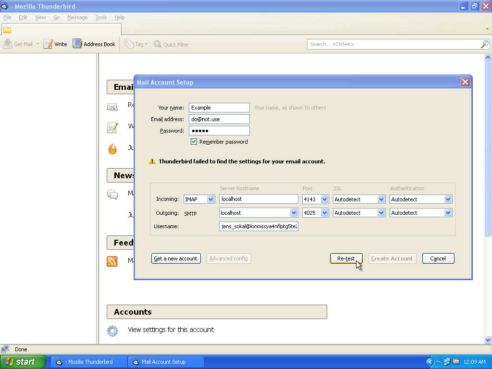
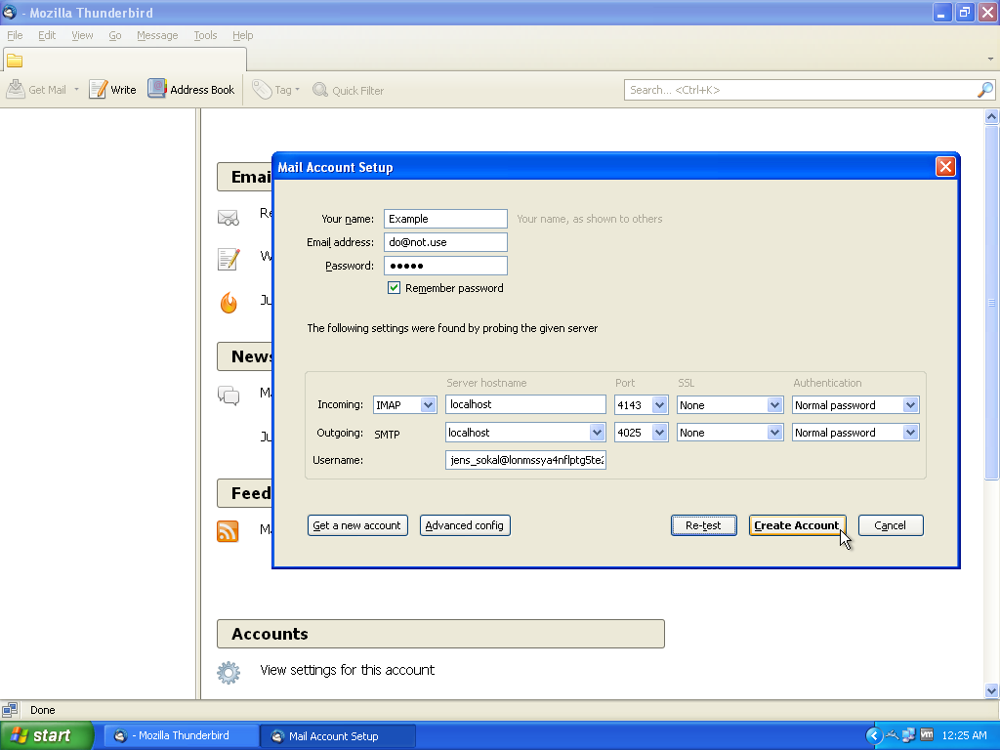

Setup
Plugin Setup
To setup the Freemail plugin first go to the the 'Plugins' page of your Freenet node's 'Configuration' menu.

Copy and paste the plugin key you got from the download page into the 'Add an Unofficial Plugin from Freenet' box and click 'Load'. Do not use the version of Freemail that is listed on the Plugins page.

After the plugin is loaded click on the Freemail link on the right side of the menu bar.

Click on the link to attach a Freemail account to an existing Web of Trust identity. If you don't have a Web of Trust identity yet stop here and create one.

Select the identity you wish to setup and choose a password. When you are ready click 'Add account'.

Now that your account is created click 'Login'.

You are now in your inbox. The first message you see will contain helpful information, the most important being your new freemail address.

Congratulations, now you have the Freemail plugin running, which means that you can send and receive emails through the Freenet web interface.
{kind=link}
Mail client setup
You can either access your mail via the web interface which appears under the 'Freemail' menu or you can setup your favorite email client.
The settings for the email client, illustrated below with the Thunderbird email client, must be setup with the following settings. The Freemail plugin only listens on the loopback interface (127.0.0.1). If you need to access Freemail from a different computer than your node is running on you must use a proxy mechanism such as SSH port forwarding. Setting that up is beyond the scope of this guide.
Settings
Incoming emails
- Protocol: IMAP
- Server: localhost
- Port: 4143
- Username: Your complete Freemail address
Outgoing emails
- Protocol: SMTP
- Server: localhost
- Port: 4025
- Username: Your complete Freemail address
Remember that your node must be running and connected to the network whilst you are reading and sending freemails.
Thunderbird
If you use Thunderbird as your email client:
Open Thunderbird and go to the 'Account Settings' menu. Under the 'Account Actions' menu choose "Add Mail Account...'
Fill in your name, Freemail address and the password you used above in step 5 of the plugin setup. Click 'Continue'

Thunderbird will try to detect your settings but will fail. When it is done, replace the Server, Port and Username information with the correct values from the table above as shown. When you are done click 'Re-test'.
When Thunderbird is happy with the settings click 'Create Account'.

This warning occurs because normally it's a bad idea to connect to a mail server over an insecure connection. Since this connection takes place on the localhost interface TLS is not necessary. Click on the checkbox and click 'Create Account' again.

Congratulations - you're now set up to send and receive email over Freenet!